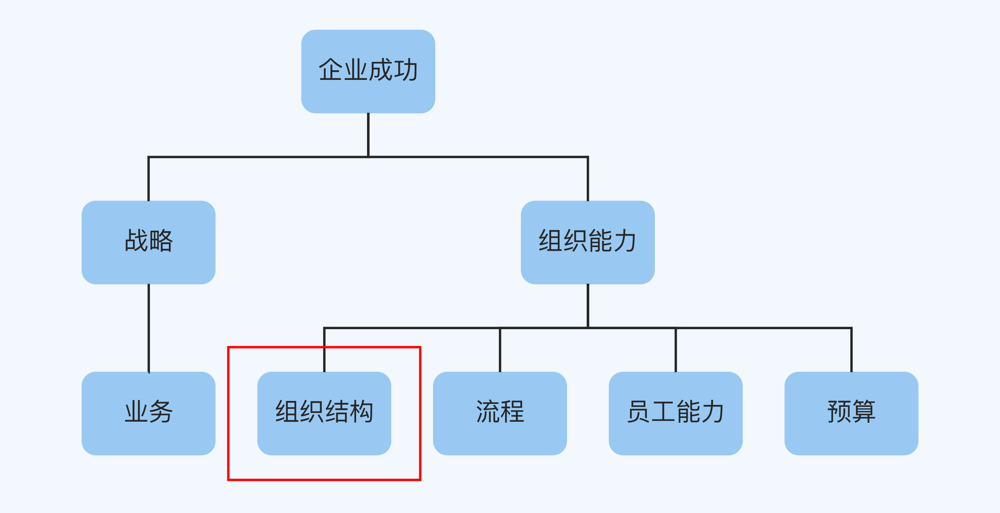
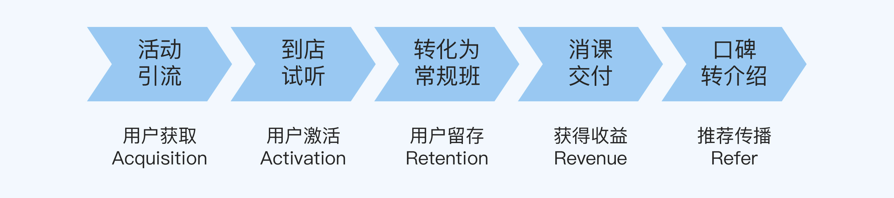
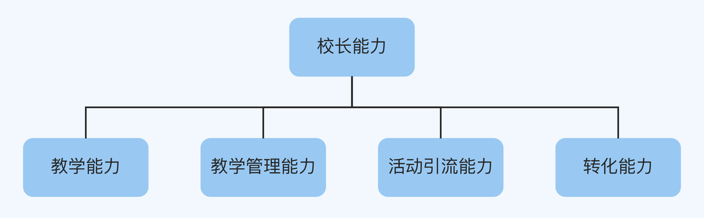
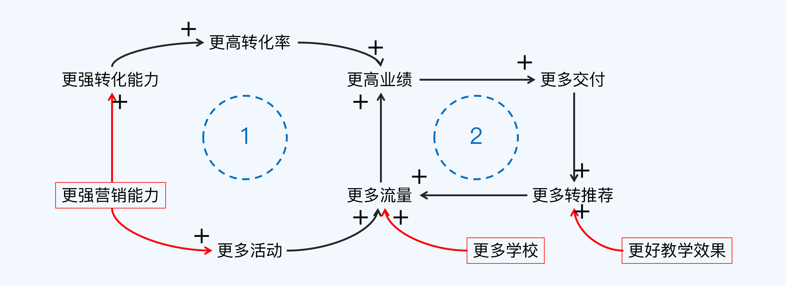

- 00 开篇词 为什么每个人都应该学会复盘？.md.html
- 01 CLAP模型：一个优秀的复盘模型是什么样的？.md.html
- 02 OPTM框架：怎么使用CLAP模型？.md.html
- 03 教练技术：怎么做复盘才能化解冲突？.md.html
- 04 制度和文化：怎么营造复盘环境？.md.html
- 05 三角法：怎么组建复盘团队？.md.html
- 06 MECE原则：怎么准备复盘资料？.md.html
- 07 五步法：如何召开一次高效的复盘会议？.md.html
- 08 事实比较：如何快速比较目标与结果？.md.html
- 09 分析原因：梳理逻辑时怎样找到切入点？.md.html
- 10 洞察规律：怎样更新认知才能找准发力点？.md.html
- 11 OKR：怎样根据复盘结论制定计划？.md.html
- 12 Double Check：怎么检查评估一次复盘的效果？.md.html
- 13 案例导学：我是怎么帮助企业做复盘的？.md.html
- 14 战略升级：5年增长100倍的跨境电商做对了什么？.md.html
- 15 业务关键点：改进一个点业绩增长50%？.md.html
- 16 组织结构设计：变动一个职位，就能带来100万_月的增量吗？.md.html
- 17 高效赋能：怎么建立流程才能把人效提升3倍？.md.html
- 18 人才培养：怎么把人才转化成实际生产力？.md.html
- 19 预算制定：人头和财务预算到底怎么定？.md.html
- 春节荐书（一）《原则》：在不确定中找到确定.md.html
- 春节荐书（二）《人类简史》：故事的力量.md.html
- 结束语 复盘，见天地见众生见自己.md.html
- 捐赠
16 组织结构设计：变动一个职位，就能带来100万_月的增量吗？
你好，我是张鹏。
前两讲我分别为你介绍了战略升级和业务关键点优化的案例。根据杨国安教授的企业成功公式：企业成功 = 战略 × 组织能力，在做企业诊断的时候，如果大的战略方向和具体业务开展都没什么问题，我就会从组织能力的角度来考虑。

说起组织能力，我想你可能首先会想到一个词，组织结构（或者叫组织架构）。我发现一个现象，企业一到要改革或优化的时候，管理层最喜欢做的事情就是“调整组织结构”。
组织结构的调整一定是大刀阔斧的整改吗？怎么设计组织结构，才能真正取得成效呢？这一讲，我会为你讲解英语培训机构A公司的例子，让我们看看一个小小的改动是怎么带来巨大的收益的吧。
案例背景：增长“虚胖”
A公司是一家少儿英语线下培训机构，在广州的直营校区有20家左右，凭借独特的游戏化产品体验设计以及对孩子贴心的服务在当地赢得了非常高的美誉度。他们服务的用户群体主要是幼儿园和小学的孩子们，也就是3～12岁的这个年龄段的学生。
我刚接手这个项目的时候，问题并不具体，只不过是A公司的老板感觉公司的增长有些“虚胖”，因为各个直营校区的实力不平衡，有的校区赚钱，有的校区不太赚钱。
老板的直觉是，随着近3年的快速扩张，团队的领导力被稀释，但是提升领导力非常不容易，需要大量的时间和人才。所以他希望我帮忙诊断一下，看看问题是不是出在这个点上；如果是，就请我帮他提一些可用的建议。
于是，在我的指导下，A公司的战略委员会组织了一次复盘。
复盘详解
对比
一般而言，老板对自己公司的业务和组织有着天然的敏感度，所以我们就从老板提出的直觉着手研究。
我们从横向和纵向两个维度分析了每个月运营数据。横向维度就是对比各个校区的差异，纵向维度就是查看三年来每个月数据的变化。
我们发现，一年内的新校区的上门流量、转化率、业绩和交付等数据全方位落后于一年以上的成熟校区，这就说明老板的担忧是有道理的。
A公司的盈利模式，主要是通过交付培训来收取学费，他们的业绩公式是：
业绩 = 流量 * 转化率 * 交付率
每年的暑假是他们的招生旺季，春节前后是淡季，其余时间则属于正常时段。通过时间轴数据对比，我们发现，淡季最大的问题是流量不够，而旺季最大的问题是转化率偏低。
逻辑
针对A公司的业务，我们可以按照AARRR模型把整个价值链分为五个阶段：
- 活动引流
- 到店试听
- 转化为常规班
- 消课交付
- 口碑转介绍
用流程图表示如下：

接下来，我们用排除法来寻找需要分析的重点。
A公司已经有统一的教学体系，并且得到了市场的认可，70%以上的新学生来自口碑推荐，所以到店试听、消课交付和口碑转介绍等和教学质量有关的环节都没有问题。
所以新校区的薄弱环节就是剩下的两个环节，活动引流和转化为常规班，它们都是和营销质量有关的环节。
每个校区的流量来源主要是以校区为圆心、以3公里为半径的圆形区域。在以往的模式下，每新开一个校区，必须同时保证教学质量和营销质量，才能带来利润增量，让校区实现盈利。
所以，人才建设是关键，而每个校区的负责人是校长，所以对校长的培养就成了关键中的关键，“千军易得，一将难求”说的大概也是这个意思。
我们用逻辑树对每个校区的负责人，也就是校长的能力做了一个模型分析。校长的能力主要包括4个方面：
- 教学能力
- 管理能力
- 引流能力
- 转化能力

很明显，作为教学、管理以及营销的复合型人才，校长的培养难度很大，正常的培养周期需要3年左右。
通过对比，我们发现在4项能力中，新校区的校长所欠缺的主要是活动引流能力和转化能力，也就是营销方面的能力。这一点正好跟新校区和营销质量有关的环节比较薄弱的发现相吻合。
这个时候，明确要解决的问题非常重要。所以我们在考虑，究竟是要解决培养校长的问题呢，还是解决活动引流和转化常规班的问题呢？
如果选择先培养校长，那么难度大、周期长，如果选择先解决活动引流和转化常规班的问题，那么又缺乏优秀的校长来做这些事，看上去这似乎是一个两难的问题。
认知
为了解决两难问题，我们需要更新认知，突破思维瓶颈。所以我们画了一张因果循环图来系统地分析业务：

从图中我们可以看出，围绕更高业绩这个终极目标，出现了2个增强循环：
- 以交付为核心的增强循环（编号2），通过更好的教学效果和更多的学校来驱动。
- 通过更强的营销能力来驱动的增强循环（编号1）。
所以，更高业绩的驱动力主要有3个：
- 更好的教学效果
- 开设更多的学校
- 更强的营销能力
提升教学效果周期长；开设更多的学校，不光需要更多的校长，而且投入大，风险高。于是我们把重点放在了更强的营销能力上。
因为学校有淡旺季之分，如果按照平时需求配备人手，旺季流量多的时候就会损失转化率；如果按照满足校区旺季的需求配备人手，那么淡季的时候就会出现人员冗余，所以我们提出了一个建立校区共享营销团队的假设。
这个营销团队可以在各个校区之间流动，旺季的时候到校区帮忙转化，淡季的时候主要想办法策划更多更高质量的营销活动。这个团队的人并不需要太强的教学能力，只要营销能力够强，通过简单的培训掌握通用的行业知识就行了。这种通用的营销人员在市场上也更容易招聘到了。
经过计算，只要旺季转化率提升2%，就可以覆盖这个团队全面的费用（即公司增加的投入），对于这种可能以极小的投入就做出大业绩的项目，营销总监也很感兴趣。
规划
确定了建立校区共享营销团队的方向之后，我们迅速制定了接下来的目标和计划，因为属于创新项目，所以我们采用OKR管理下的MVP来迭代进行，具体分为三个阶段实施：
第一阶段是MVP验证，主要的目的在于验证共享营销团队能提升旺季转化率的MVP是否跑得通。
第二阶段是逐步推广，如果MVP跑得通，大规模推广之后，是否对整体业绩有大体量的提升。
第三阶段是确立边界，如果第二阶段能够验证成功，要计算这种模式的边界在哪里，只是依靠营销提升业绩一旦超过某个边界，边际成本反而会上升，这时候原有模式就需要迭代升级了。
最终结果：利润大幅增加
MVP验证
由于第一阶段正好在销售旺季，所以关注点在于转化率，我们制定的OKR如下：
O：打造业绩提升的第二增长曲线——“共享营销团队”。
KR1：做出团队成员画像。
KR2：招聘两个成员。
KR3：分配6-8个校区，在3个月内额外提升30%业绩。
经过简单的行业知识培训，我们为招聘到的2个共享营销团队人员分配了6个校区去做尝试。经过短暂的磨合，他们第一个月做出了60W的业绩，第二个月做出了80W的业绩，这个结果大大超出当初的预期。
考虑到并没有新增校区，我们的投入只是这两个人的工资和绩效支出，成本比例小到几乎可以忽略不计。初步验证成功之后，团队迅速地进行复盘迭代，夯实了这种“共享营销团队”的整体运营模式。
逐步推广
根据A公司的校区规模，我们按照3～4个学校分配1个共享营销团队人员的比例，最终把团队扩建到8个人，并且结合新校区和成熟校区的不同情况，继续升级运营模式。最终这个团队的成果远远超过100万/月的增量利润，相当于新增了若干个校区。
确立边界
当“共享营销”团队达到8人之后，这个模式也就对存量市场的业绩和利润提升做到了极限。这时，原有的MVP就已经成为固定的流程和组织结构。如果还想创造新的增量市场，就需要进一步迭代升级才有可能了。
小结
在这一讲中，我通过一个做少儿英语培训的A公司的案例对整个复盘的流程做了一个详细的说明。现在，我们回顾一下重点：
- 通过老板对业务天然的敏感点进行切入。
- 通过AARRR模型梳理整体工作流程，通过逻辑树找出能力模型的选项。
- 对比业务找出可能的增长点，通过因果循环图对假设进行推演，找出提升业务的关键点。
- 用OKR来管理验证创新业务的MVP，根据业务模型计算创新的边界。
组织结构的调整，一定是业务导向的。灵活运用流程图和矩阵图可以分析出提升业务的关键点，用因果循环图可以对假设进行推演，MVP可以小规模地进行实践迭代。你学会了吗？
思考题
这就是这一讲的全部内容了，最后留一道思考题给你：
回忆一下在你接触的项目或者业务中，有没有和这一讲类似的情况，你会怎样设计组织结构来实现提升业务产值的目标呢？
欢迎你把答案写在留言区，和我一起讨论。
© 2019 - 2023 Liangliang Lee. Powered by gin and hexo-theme-book.